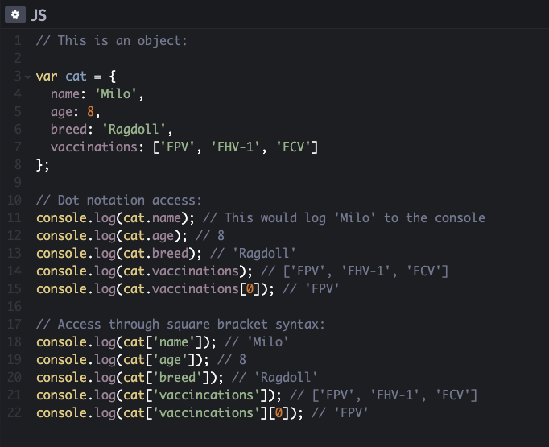

When we are looking at a website, it is most likely that our browser will be receiving HTML and CSS from the web server that hosts the site. Small and/or static websites are often written just using HTML and CSS.
The web browser interprets the code of HTML and CSS to create a web page that we see.
But what exactly is HTML and CSS?
Imagine an amazing birthday cake with all sorts of edible decorative elements like icing, fondant figures, chocolate buttons, sprinkles, a cream layer in the middle of the cake, etc.
To make this cake, we need to bake the plain cake base first, so we get the foundation and structure of our 'artwork'.
We could present and eat the plain cake, just as it comes out of the oven, but it would look very boring and taste a bit bland. That's not how we impress people, right?
Okay, let's add some cool decoration to it which makes our cake look great and presentable.
For web developers the plain cake is the HTML and the decoration is the CSS. The HTML gives the page it’s structure and contains it’s content.
The CSS adds styling to the page. It states, how the HTML content is presented (backgrounds, borders, colours, fonts, box dimensions, etc.).
Self-made unicorn cupcake
Explaining control flow and loops
Control flow is the order in which the instructions, or statements are executed in a program.
Or in other words: The path that JavaScript takes when executing code. It usually reads the code starting from the first line until the last line
( unless we have defined some instructions in the code that will change the control flow ).
I am coming back to my amazing birthday cake analogy to explain control flow in simple English:
Control flow is like following a recipe step by step in a logical order. We first turn on the oven to pre-heat, after that we weigh up all our ingredients and crack the eggs, then mix everything together in a bowl,
grease the cake tin, fill the batter into the cake tin, bake the cake, take the cake out of the oven when it is ready and let it cool down before taking it out of the tin.
This is a logic order and it would be very silly if we swap these steps around.
The computer behaves in the same way by following the instructions of the code from start to beginning, step by step.
However, programmers often need to modify a program’s control flow. One example for how they can do that are ‘loops’.
Loops are control flow statements that are used to do something repeatedly. Loops check a condition first and if the condition returns true, the code block will run.
Then the condition will be checked again and if it still returns true, the code block will run again. It repeats these steps until the condition returns false.
Because I have a really sweet tooth ( some might call it sugar addiction ) and I love baking so much, I am throwing in another sweet example:
We are making an Italian meringue as a topping for a cake ( Not the birthday cake from before. This one is a fresh cake. ). A meringue is made, by whipping egg whites and tons of caster sugar ( or syrup ) together with an egg beater.
The result is a stiff but fluffy and sweet meringue mixture. Tastes a bit like a marshmallow but the texture is softer, more cream-like.
The tricky part with the meringue making is, to know when we have got the right texture and need to stop mixing. If it is undermixed, it is soggy and will drench our cake.
If we mix it for too long, the mix turns into a grainy consistency. A perfect meringue is thick, so it forms peaks, and looks smooth and glossy.
In pseudocode it might look something like this:
Pseudocode showing a loop exampleSuper Dickmann's - German sweets
In Germany we have these yummy sweets with a hilarious name: 'Super Dickmann's. 😆 They are filled with a soft meringue.
The DOM
DOM is the abbreviation for 'Document Object Model'.
It helped me to understand what the DOM is, by first understanding of what the DOM is not.
The DOM is NOT the HTML code I write (the one I can see in the browser when I click on ‘View Source Code'.
Why? Because browsers are able to fix certain elements of our code or insert elements that are missing but required.
These elements will be there in the DOM, and we will be able to find them with JavaScript and style them with CSS, even though they are not in our HTML.
So, the DOM is NOT part of HTML but also not part of JavaScript. It is rather a separate set of rules which are implemented by all browsers.
The DOM has two main tasks:
→It specifies exactly how browsers should create a model of an HTML page and how JavaScript can access and update the contents of a web page while it appears in the browser window.
As a browser loads a web page, it creates a model of that page. This model is called a DOM tree, and it is stored in the browser’s memory.
The DOM is called object model because the model (the DOM tree) is made of objects. Each object represents a different part of the page loaded in the browser window.
The DOM also defines methods and properties to access and update each object in the model, which in turn updates what the user sees in the browser.
Let's climb the DOM tree to see how it is build:
The DOM tree
A DOM tree consists of four main types of nodes: The document node, element nodes, attribute nodes and text nodes. Each node is an object with methods and properties.
JavaScript code can access and update this DOM tree ( but it never changes the source HTML! ). Any changes that are made to the DOM-tree are reflected in the browser.
The document node is at the top of the tree. It represents the entire page and is the starting point to any visit to the DOM tree. That means: When we access any element, attribute or text node, we navigate to it via the document node.
Element nodes are the elements from our HTML code that describe the structure of an HTML page. ( e.g. <h1>, <p>, etc. )
Attribute nodes are attributes carried in the opening tags of HTML elements like classes and ID’s.
Text nodes are the texts within elements.
Accessing data from arrays vs. Accessing data from objects
Arrays
An array in JavaScript is a variable that stores a list of values which are related to each other. The values are assigned to the array in square brackets,
and each value is separated by a comma. The values don’t need to be from the same data type. It is okay to store strings, numbers and Booleans all in the same array.
Values in an array are accessed as if they are a numbered list which starts at zero and NOT at one. Each value in an array is automatically given a number called index.
JavaScript Arrays
To find an item on the list, the array name has to be specified as well as the index number in square brackets.
INDEX
VALUE
0
'milk'
1
'eggs'
2
'bread'
3
'bananas'
4
'tomatoes'
Objects
Objects group together a combination of data made out of variables and functions.
However, within an object variables become known as properties and functions become known as methods.
Properties tell us about the object, for example a cat ( as the object ), such as it’s name, age, breed, vaccinations, etc.
Like variables and functions, properties and methods have a name and a value. In an object, the name is called key.
An object can not have two keys with the same name because the keys are used to access their corresponding values.
The value is just called value and the data type doesn’t matter. It can be a string, a number or a Boolean, even an array or another object.
We can access the properties or methods of an object using dot notation or square brackets.
Dot notation: To access a property or method we use the name of the object, followed by a period, then the name of the property or method we want to access.
Square bracket syntax: The object name is followed by square brackets, with the property or method inside them.

JavaScript Objects
Functions
A function in JavaScript is a bunch of code or statements bundled together to perform a specific task. This bunch of code only runs when the function is called. That means that our script can ask the function to perform the task only when it is required. For example, we have a task that we only want to perform if the user clicks on a specific element in the page.
Functions also allow us, to organise our code into sections and to reuse code.